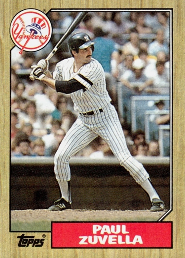

Paul Zuvella
Career Highlights & Facts
(Facts are AI-generated and may require verification)
- Primarily operated as a middle infielder at shortstop and second base.
- Drafted in the 15th round of the amateur draft.
- Involved in a mid-season trade that sent a future Hall of Famer to a new club.
Would you like to find out more about Paul Zuvella?
This bio is not assigned. Want to write a SABR bio? Contact
bioproject@sabr.org
.
Full Name
Paul Zuvella
Born
October 31, 1958 at San Mateo, CA (USA)
Stats
Baseball Reference
Retrosheet
Paul Zuvella is an American former Major League Baseball player and minor league baseball manager. Primarily a shortstop and second baseman, he stood 6'0" tall, weighed 178 pounds, and batted and threw right-handed.
Career Totals
| WAR | AB | H | HR | BA | R | RBI | SB | OBP | SLG | OPS | OPS+ |
|---|---|---|---|---|---|---|---|---|---|---|---|
| -2.4 | 491 | 109 | 2 | .222 | 41 | 20 | 2 | .275 | .277 | .552 | 53 |
Statistics via Baseball-Reference.com
The Original Clue